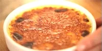

GIF Format Example
About This Image
A dessert that utilizes a few simple ingredients, but can be easily messed up if you aren't careful. A custard that can be flavored in whatever way you desire (vanilla, orange, etc.) and topped with sugar that is caramelized with a kitchen torch. Breaking your spoon through that caramelized sugar top is satisfying.
Why GIF Format?
I wanted to use a GIF format to showcase the creme brulee being actively caramelized. Seeing that is oddly satisfying. But the one gif I could find that showed creme brulee sugar being caramelized didn't look appetizing. Therefore, I decided on a GIF that showcases the creme brulee being busted open with a spoon. GIFs are the first thing people think of when you think of an animated short image. They are able to support animations, but are limited to a palette of 256 colors.
Image source: Giphy